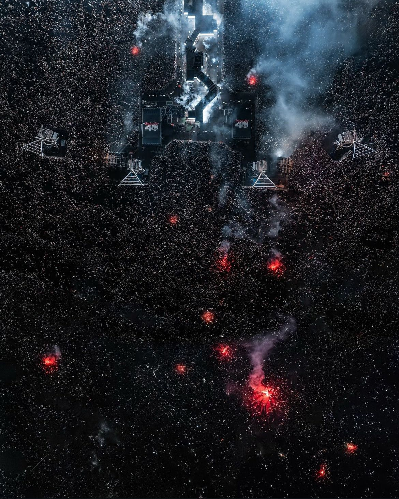

Travis Scott, born Jacques Webster II on April 30, 1992, in Houston, Texas, is a prominent American rapper, singer, and songwriter. Influenced by artists like Kid Cudi and Kanye West, he rose to fame with his unique sound that blends hip-hop, trap, and psychedelic music.
After releasing his first mixtape, "Owl Pharaoh", in 2013, he gained significant attention and has since become one of the most influential figures in contemporary hip-hop.
| Album | Release Year | Famous Songs |
|---|---|---|
| Rodeo | 2015 | Antidote, 3500, Oh My Dis Side |
| Birds in the Trap Sing McKnight | 2016 | Goosebumps, Sweet Sweet, Beibs in the Trap |
| Astroworld | 2018 | Sicko Mode, Butterflies, Stargazing |
| Utopia | 2023 | FE!N, My Eyes, Hyaena |
Down below we have a picture of his most recent concert in Rio De Janeiro, where more than 115,000 people attended it.
"I think the best way to describe my music is to say that it's a blend of everything that has inspired me." - Travis Scott
"I want to make music that makes people feel good and make them think the unthinkable." - Travis Scott